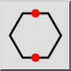

Polygon (sida, sida)
Verktygsfält / ikon:


Meny: Rita > Form > Polygon (sida, sida)
Genväg: P, G, 4
Kommandon: polygonss | pg4
Detta är en automatisk översättning.
Verktygsfält / ikon:


Skapar polygoner från två motsatta hörn eller sidor.
alternativ. Giltiga tal är från 3 till 99.
motstående hörn.
eller ange en koordinat på kommandoraden.